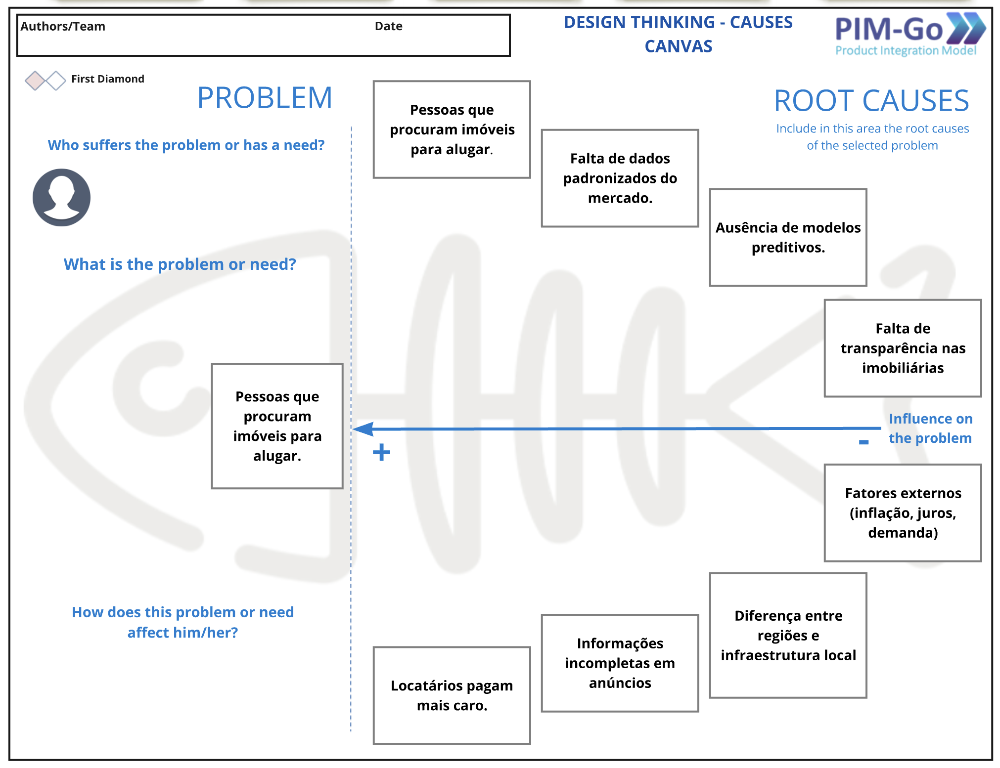
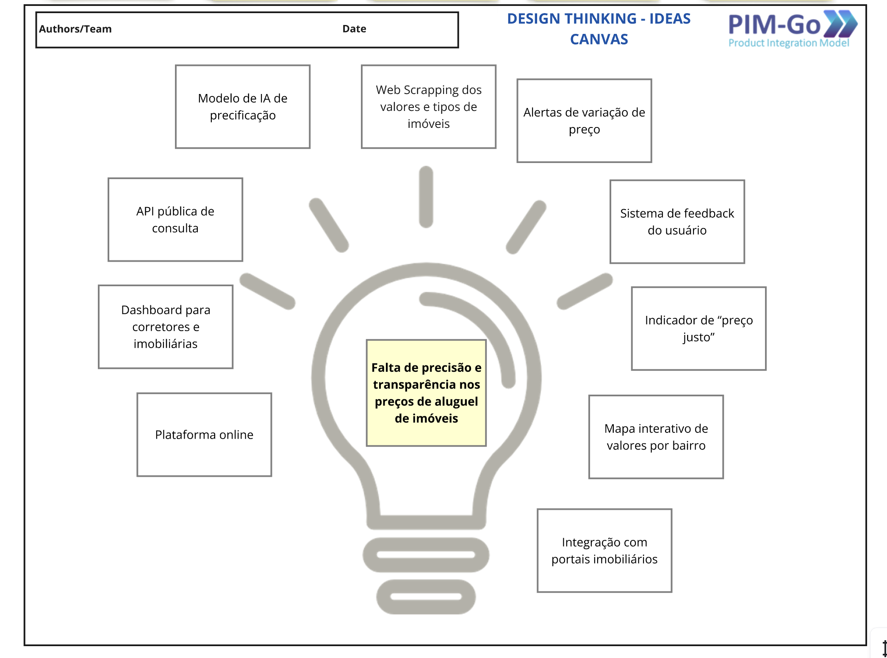
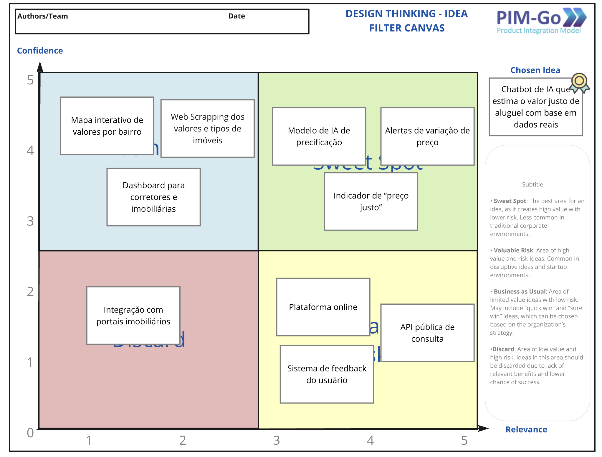
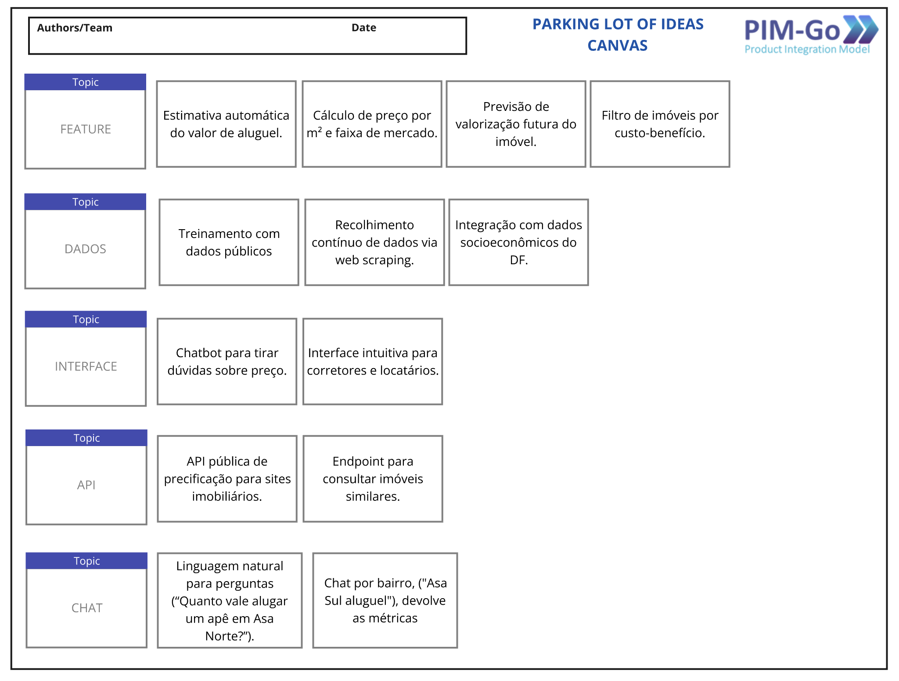
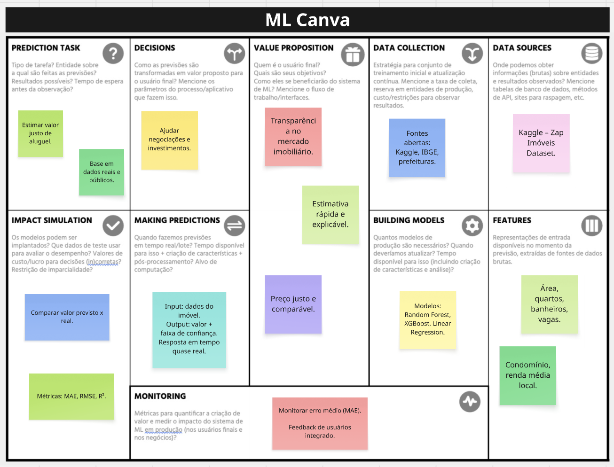

Artefatos
1. Introdução
Este documento tem como objetivo apresentar e detalhar os artefatos criados durante a fase inicial de concepção do projeto Predição de Valor de Aluguel de Imóveis com IA.
O propósito do projeto é desenvolver uma solução inteligente capaz de estimar o valor justo de aluguel de imóveis com base em dados públicos e reais do mercado, promovendo transparência, acessibilidade e eficiência no setor imobiliário.
A fase de concepção foi fundamental para transformar uma necessidade do mercado em um plano de projeto estruturado, com escopo, funcionalidades e tecnologias bem definidas.
2. Framework e Ferramentas Utilizadas
A metodologia de concepção foi apoiada pelo framework PIM-Go (Product Integration Model), que fornece modelos e templates para guiar o processo de design de produto de forma sistemática.
Adicionalmente, foram utilizadas ferramentas de apoio à modelagem de Machine Learning, para estruturar o núcleo de IA responsável pela predição dos valores.
Ferramentas utilizadas:
- Framework PIM-Go:
- Design Thinking – Causas
- Design Thinking – Ideias
- Filtro de Ideias
-
Parking Lot de Ideias
-
Ferramenta técnica:
- Machine Learning Canvas – para definição do fluxo e arquitetura do modelo preditivo.
3. Detalhamento dos Artefatos
3.1. Artefato 1 – Design Thinking: Causes Canvas
Descrição da Ferramenta:
Modelo visual baseado no Diagrama de Ishikawa (Espinha de Peixe), utilizado para identificar as causas-raiz de um problema central.
Aplicação no Projeto:
Foi utilizado para decompor o problema principal de falta de transparência e precisão nos valores de aluguel de imóveis, permitindo compreender os fatores que influenciam a precificação desigual.
Principais Insights:
- Problema central: Dificuldade de estimar o valor justo de aluguel.
- Causas-raiz identificadas:
- Falta de dados padronizados e atualizados do mercado.
- Ausência de modelos preditivos inteligentes.
- Informações incompletas nos anúncios.
- Diferenças regionais e infraestrutura local.
- Subjetividade na avaliação dos corretores.
- Fatores econômicos externos (inflação, juros, demanda).
Figura 1 – Causes Canvas – Predição de Aluguel

Fonte: Elias Oliveira e Gabriel Lima
3.2. Artefato 2 – Design Thinking: Ideas Canvas
Descrição da Ferramenta:
Canvas voltado para a ideação da solução, estruturando conceitos e funcionalidades do produto.
Aplicação no Projeto:
A ferramenta foi usada para converter o problema de precificação desigual em uma solução inovadora baseada em IA, capaz de aprender padrões reais do mercado imobiliário.
Principais Insights:
- Ideia central: Plataforma de IA para estimar o valor justo de aluguel.
- Principais funcionalidades:
- Estimativa automática do valor de aluguel.
- Mapa interativo com preços médios por bairro.
- Dashboard para corretores.
- API pública de consulta.
- Chatbot para tirar dúvidas sobre preços.
Figura 2 – Ideas Canvas – Predição de Aluguel

Fonte: Elias Oliveira e Gabriel Lima
3.3. Artefato 3 – Idea Filter Canvas
Descrição da Ferramenta:
Matriz de priorização que avalia as ideias geradas com base em Relevância e Confiança, para definir o foco do desenvolvimento.
Aplicação no Projeto:
O filtro foi usado para avaliar as ideias levantadas no Ideas Canvas e determinar o escopo do MVP.
Principais Insights:
- Sweet Spot (Alta relevância, Alta confiança):
- Modelo de IA de precificação.
- Indicador “Preço Justo”.
- Alertas automáticos de variação de valor.
- Valuable Risk:
- API pública de integração com portais.
- Aplicativo mobile.
- Business as Usual:
- Dashboard de corretores e mapa interativo.
Figura 3 – Idea Filter Canvas – Predição de Aluguel

Fonte: Elias Oliveira e Gabriel Lima
3.4. Artefato 4 – Parking Lot of Ideas
Descrição da Ferramenta:
Técnica usada para registrar todas as ideias geradas, sem ainda aplicar filtros ou priorização.
Aplicação no Projeto:
O Parking Lot serviu como repositório de todas as funcionalidades e componentes do sistema, formando uma visão completa da solução.
Principais Insights:
- Feature: Estimativa automática, cálculo de preço por m², histórico de valores.
- Dados: Treinamento com dados públicos (Zap, IBGE, IPTU) e atualização contínua.
- Interface: Chatbot, mapa interativo, e dashboard simples.
- API: Integração com sites imobiliários e retorno em JSON.
- Chat: Linguagem natural e interação via Telegram/Web.
Figura 4 – Parking Lot of Ideas Canvas – Predição de Aluguel

Fonte: Elias Oliveira e Gabriel Lima
3.5. Artefato 5 – Machine Learning Canvas
Descrição da Ferramenta:
Canvas estratégico para planejar sistemas baseados em IA, destacando proposta de valor, dados, features e métricas.
Aplicação no Projeto:
Foi usado para estruturar o modelo preditivo de preços de aluguel, conectando os aspectos técnicos e de negócio.
Principais Insights:
- Proposta de valor: Estimar o preço justo e reduzir distorções no mercado de aluguel.
- Dados: Base de imóveis (Kaggle, IBGE, portais públicos).
- Features: Área, número de quartos, banheiros, localização, taxa de condomínio.
- Modelo: Regressão (RandomForest, XGBoost).
- Avaliação: MAE, RMSE e comparação com valor de mercado real.
- Risco crítico: Dados desatualizados e ruído em anúncios.
- Métrica de sucesso: Precisão das previsões e satisfação dos usuários.
Figura 5 – ML Canvas – Predição de Aluguel

Fonte: Elias Oliveira e Gabriel Lima
4. Conclusão
A aplicação sistemática do framework PIM-Go e dos canvas de concepção permitiu transformar uma necessidade do mercado imobiliário em um projeto de IA estruturado e validado.
O processo resultou em:
- Um entendimento claro das dores dos usuários (locatários e corretores).
- Um escopo técnico e funcional sólido.
- A definição de um MVP viável, com foco em estimativa de valor justo e acessibilidade digital.
Essa base fornece segurança para avançar para as próximas etapas de prototipagem, modelagem e integração dos componentes de IA.
Histórico de versões
| Versão | Data | Descrição | Autor | Revisor |
|---|---|---|---|---|
1.0 |
23/09/2025 | Criação do documento | Elias Oliveira, Mateus | |
2.0 |
07/10/2025 | Reformulação dos artefatos | Gabriel Lima, Mateus |